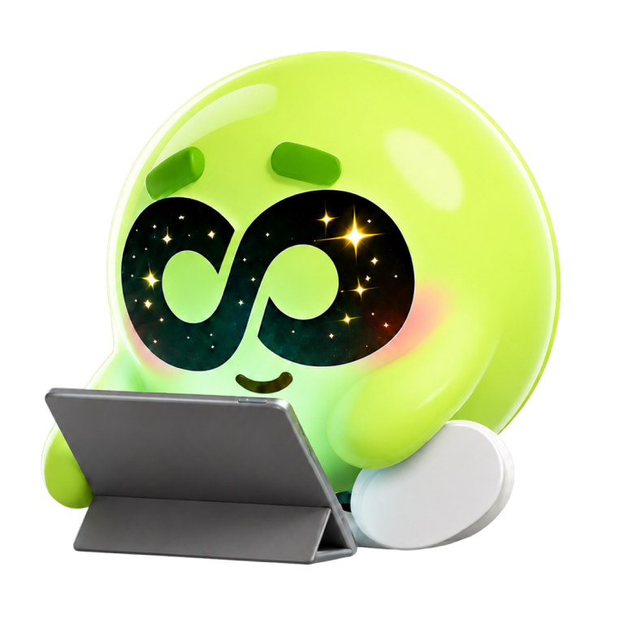

가볍게 인사하고, 서로 소개부터 할까요? 편하게 대답해 주세요.
ここから25分。教わるのではなく、一緒に楽しく話してみましょう！この授業がおわったら既に話せた内容ももっと自然な韓国語に変わっていきます。

수업 전에 읽으면서 궁금한 거 있었어요? 있으면 그 문장을 눌러 주세요. 같이 볼게요.授業前に読んでいて気になったことはありましたか？ あればその文を押してください。一緒に見てみましょう。
선호하는 대화 방식을 선택해 주세요.希望する会話の進め方を選んでください。
정답은 없어요. 대답할 때마다 그 문장을 받아 적고, 그 자리에서 같이 고칩니다.
몸풀기 1로또 사 본 적 있어요?宝くじを買ったことがありますか？
몸풀기 2요즘 갖고 싶은 것 중에서 제일 비싼 게 뭐예요?最近ほしいものの中で、いちばん高いものは何ですか？
질문 1로또 1등에 당첨되면, 가장 먼저 뭘 할 거예요?宝くじで1等に当たったら、まず何をしますか？
질문 2당첨된 거, 누구한테 제일 먼저 말할 거예요?当たったこと、誰にいちばん先に話しますか？
질문 3돈 걱정이 없어져도, 지금 하는 일이나 공부를 계속할 거예요?お金の心配がなくなっても、今の仕事や勉強を続けますか？
질문 4큰돈이 생겼는데 형편이 더 나빠지는 사람도 있어요. 왜 그럴까요?大金が入ったのに、かえって暮らし向きが悪くなる人もいます。どうしてでしょうか？
질문 5노력해서 번 돈이랑 운으로 얻은 돈, 뭐가 달라요?努力して稼いだお金と、運で手に入れたお金、何が違いますか？
질문 6그럼 반대로, 돈이 아무리 많아도 못 하는 건 뭘까요?では逆に、どんなにお金があってもできないことは何でしょうか？
오늘 이야기한 걸 바탕으로, 제가 한마디 남길게요.今日話したことをもとに、私からフィードバックをお伝えしますね。
おつかれさまでした！👏
体験レッスンは
これで おわり！
25分、ずっと韓国語で話しましたね！
また お会いしましょう ;)